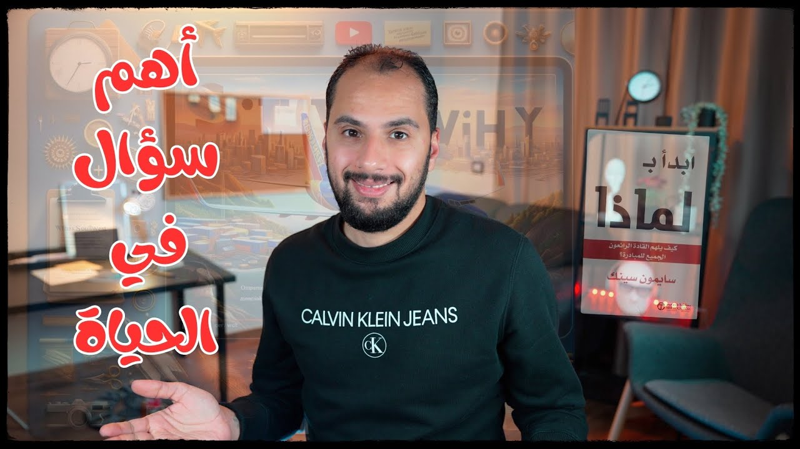

ملخص كتاب
أهم سؤال في الحياة! ابدأ بلماذا للكاتب سايمون ثينك
شركة طيران صغيرة قررت تنافس القطر والأتوبيس بدل شركات الطيران الكبيرة، وفضلت تكسب أكتر من 40 سنة. بحسب Simon Sinek في كتاب Start With Why، السر في سؤال واحد بيبدأ من جوه الدايرة: ليه؟

شغّل الحلقةلو إنت عايش في أمريكا سنة 1966 وقبلها، وجيت قلت لك استخدم الطيارة في السفر بدل القطر أو الأتوبيس، تقريبًا كنت هتشتمني. لأن وقتها كانت فكرة السفر بالطيارة عاملة زي فكرة السفر بالمركبات الفضائية دلوقتي، وكانت للنخبة بس.
ولو إنت مستثمر وعايش في نفس الفترة دي، وكنت عاوز تخسر كل فلوسك، مش هتلاقي مشروع أفضل من إنشاء شركة طيران. لأن ببساطة، بحسب Simon Sinek، في أوائل السبعينيات كان 15% بس من المسافرين هم اللي بيستخدموا الطيارة، وكان فيه منافسة قوية على الـ15% دول، فما بالك بقى لو دخل منافس جديد؟
لكن كل الكلام ده بالنسبة لمؤسسي Southwest كان بلح. قرروا يدخلوا المنافسة، ومش بس حققوا منها أرباح مهولة، لأ، دول غيّروا شكل الطيران للأبد. وسبب نجاحهم ده حاجة بسيطة قوي، لكنها هتفرق معاك شخصيًا.
إزاي Southwest نجحت لما نافست القطر والأتوبيس؟ 1:06
سنة 1967 بتبدأ حكاية Southwest Airlines (ساوث ويست) على إيد اتنين: Herb Kelleher وRollin King.1 وفي الحكاية زي ما بتتحكى، واحد فيهم بيقول للتاني: ما تيجي نعمل شركة طيران؟ والرواية اللي Southwest بتحكيها إن King هو اللي عرض الفكرة على Kelleher.1 والتاني بيرد: النجاح في المجال ده مستحيل لو فكرنا ننافس شركات الطيران الكبيرة، لأنهم مسيطرين على السوق كله، فالحل إننا نروح لسوق تاني.
ويعني إيه سوق تاني؟ 15% بس بيركبوا الطيارة، ودول كلهم زباين الكام شركة الكبار. فلو عاوز تنجح، مش هتنافس شركات الطيران، إنت هتنافس القطر والأتوبيس، يعني هتركز على الـ85% اللي عمرهم ما ركبوا طيارة ولا فكروا يركبوها. ودي بالظبط الفكرة اللي Simon Sinek بيحكيها: Southwest كانت مهتمة بالـ85% التانيين. وفعلًا أسسوا الشركة، وكان شعارها: السفر الجوي للجميع. وخليك فاكر الشعار ده، علشان هنرجع له تاني.
الفكرة حلوة ومفيش كلام عليها، لكنها في نفس الوقت مغامرة كبيرة جدًا، بسبب تحديين: تغيير ثقافة الناس عن السفر وركوب الطيارة، وتكلفة التشغيل العالية اللي هتخلي السفر بالطيارة للجميع شبه مستحيل.
لكن Herb وKing حطوا قدامهم هدف واحد بس، وهو السفر الجوي للجميع. وده خلاهم يعملوا شركة قريبة من المواطن العادي: اتخلّوا عن الرفاهية الكبيرة جدًا اللي كانت بتعملها الشركات التانية، واستخدموا طيارات صغيرة، واعتمدوا على الرحلات المباشرة القصيرة. الحاجات دي ساهمت بشكل كبير في تقليل التكاليف، ولو إنت جربت طيران اقتصادي زي Wizz Air هتفهم قصدي، لأنه في رأيي متاخد من نفس نموذج عمل Southwest.
إزاي تغيّر ثقافة الناس عن السفر؟ 2:44
التحدي الأصعب كان تغيير ثقافة الناس عن السفر بالطيارة، وده كان محتاج قصة. والحدوتة اللي بدأوا يحكوها صوّرت Southwest البطل الشعبي، اللي جاي يحقق طموحات الشعب في ركوب الطيارة اللي ما كانش بيستخدمها غير النخبة. وبعدين، في التسعينات، بقى إعلانهم بيقول: أنت الآن حر تتنقل في البلد.2
وما اكتفوش بكده. سألوا نفسهم: إزاي Southwest تكون شركة المواطن العادي فعلًا؟ هل السعر كفاية؟ لأ طبعًا. أمال إيه؟ البساطة. لازم المواطن العادي يعرف يحجز ويسافر ببساطة وسهولة، فاشتغلوا على إنهم يشيلوا كل التعقيدات من عملية الحجز. ما خلّوش السعر مرتبط بتواريخ زي باقي شركات الطيران، وعملوا تذاكر موحدة زي تذاكر القطر والأتوبيس، نوعين بس: نوع للرحلات اللي بالنهار، ونوع للرحلات اللي بالليل والأجازات، زي ما Simon Sinek بيحكي. وفضلوا يخلّوا كل حاجة مناسبة لهدفهم، لدرجة إنهم غيّروا الزي الرسمي بتاع الموظفين علشان يبقى أقرب للناس.
طرق Southwest حققت نجاح كبير جدًا وغيّرت فكر الناس فعلًا عن السفر بالطيران، ولدرجة إن Simon Sinek بيوصفها بإنها شركة الطيران الأكتر ربحية في التاريخ. قعدت أكتر من 40 سنة مفيش سنة فيهم حققت خساير، وأول سنة خسرت فيها بعد السنين دي كانت سنة كورونا، لما كل العالم قعد في البيت.3 يعني نجاح مستمر لحوالي نص قرن.
ولو إنت فاكر إن نجاحهم كان بسبب السعر الرخيص، تبقى غلطان. شركات الطيران التقليدية حاولت تنافسها وعملت خطوط طيران أقل سعر وبجودة أعلى، لكنها فشلت وقفلت بعد كام سنة.45
إيه هي الدايرة الذهبية في كتاب Start With Why؟ 4:16
حاجة غريبة بتاخدنا لمعضلة أغرب: ليه إحنا بنفضّل منتج عن التاني، رغم إن التاني ممكن يكون سعره أقل وجودته أعلى؟ ليه بنحب نشرب قهوة من مكان معيّن، رغم إن البن بتاعه مش أحسن بن، وسعره كمان مش مناسب؟
Simon Sinek في كتاب Start With Why بيجاوب على السؤال ده، وبيقول إن سبب نجاح Southwest وApple والقادة المؤثرين في التاريخ هو استخدامهم للدايرة الذهبية. Simon رسم دايرة من 3 طبقات: الطبقة اللي على السطح كتب عليها «ماذا»، واللي في النص «كيف»، والطبقة العميقة اللي جوه خالص «لماذا».6 وقسّم الشركات والسياسيين والشخصيات المشهورة والمؤثرة لنوعين.
ليه البداية من بره الدايرة بتفشل؟ 5:05
بحسب Simon Sinek، النوع الأول هم أغلبية الناس. لما بييجوا يعملوا حاجة، سواء مشروع جديد أو يلمّوا أصوات الناس في الانتخابات أو حتى يتعلموا حاجة جديدة، بيبدأوا دايمًا من بره الدايرة لجوه. السياسي مثلًا بيسأل نفسه: أنا عاوز إيه؟ والإجابة إنه يلم أصوات الناس. وده بيدخّله لمرحلة «كيف»: إزاي ألم الأصوات؟ فما بيلاقيش قدامه غير إقناع الناس بلستة كاملة من الوعود. والمشكلة إنه بعد ما ينجح بيبقى مش عارف هيعمل إيه، وحتى لو عاوز يخدم الناس فعلًا، بيفشل في الآخر، لأنه ابتدى غلط: من بره لجوه، والمفروض من جوه لبره.
ونفس القصة على مستوى أصغر: محمد اكتشف إن فيه محل كشري فتح في المنطقة، والناس ملمومة عليه لآخر الشارع. المشهد ده خلاه يفكر يعمل زيه، فبدأ بمرحلة «ماذا»: أنا عاوز محل كشري زي بتاع الراجل ده. وبعدها «إزاي»: جمع كل الفلوس اللي حوّشها من الغربة وفتح المحل، وعمل عروض جابت له ناس كتيرة فعلًا. لكنه اكتشف في النهاية إنه بيخسر، فاضطر يلغي العروض ويرفع الأسعار تاني، فالناس بطّلت تيجي.
Simon بيقول إن سبب الفشل في القصتين إنهم ابتدوا غلط، والبداية دي خلتهم يلجأوا للتلاعب. والتلاعب هنا مش معناه حاجة وحشة؛ هو يقصد أسلوب العصاية والجزرة: العروض، أو التخويف، أو الوعود الكتير. والمشكلة إن الأسلوب ده بيخلي العلاقة بينك وبين العملاء أو الناس اللي بتتعامل معاهم مبنية على المصلحة، والمصلحة هنا هي العروض أو الوعود اللي بتقدمها. عكس الأشخاص المؤثرين فعلًا والشركات الناجحة زي Apple وSouthwest، اللي بيبنوا علاقتهم مع الناس على الولاء.
إزاي تكسب ولاء الناس؟ 6:51
الولاء ده هو اللي خلّى الناس ما سابتش Southwest لما الشركات التانية نافستها وقدمت رحلات أرخص منها. طب إزاي أخلق الولاء؟ Simon Sinek مش بس جاوب على السؤال ده، ده كمان قدم حل لمشكلة بتواجه معظمنا: إزاي أستمر في أي حاجة بعملها؟ والحل في كلمة واحدة: «لماذا».
لو سألت مؤسسين Southwest: ليه عاوزين تعملوا شركة طيران؟ كانت إجابتهم هتطلع بكل تلقائية: علشان نخلي السفر الجوي متاح لكل مواطن. يعني بدأوا عكس معظم الناس، من عمق الدايرة، وسألوا نفسهم: ليه؟ ولما بقى عندهم رؤية واضحة وسبب واضح للشركة، بقى أسهل بكتير يلاقوا طرق واستراتيجيات توصّلهم للهدف.
نرجع لمحمد بتاع محل الكشري. لو كان بدأ من جوه الدايرة وسأل نفسه: ليه أنا عاوز أفتح محل كشري؟ أول إجابة هتيجي في بالك: إنه يكسب فلوس. لكن دي ما تنفعش تكون إجابة «لماذا» لسببين. الأول إن الربح المادي عرض جانبي، نتيجة للقيمة اللي بتقدمها؛ فلو عاوز تنجح وتستمر، لازم تقدم قيمة للناس. والتاني، وده أهم نقطة وهي اللي بتخلق الولاء، إن إجابة «لماذا» لازم تتفق مع إجابة: ليه الناس هتشتري المنتج بتاعك؟
وبكده ممكن تكون إجابة محمد: إني أقدم كشري بجودة الأكل البيتي وبطعم أكل الشارع. وفي الحالة دي عمره ما هيركز على العروض وتقليل الأسعار؛ لما يروح لطبقة «إزاي» هيركز تلقائي على الجودة والطعم، ويخلي ديزاين المحل زي البيت من جوه مثلًا، أو على شكل عربية كشري كبيرة، لغاية ما يوصل لطبقة «ماذا»: الأطباق والخدمات والمنيو والعروض. والناس اللي هتيجي عنده هيبقى عندهم سبب مقنع إنهم ييجوا تاني، ومش هتفرق معاهم العروض، لأن بقى عندهم ولاء للفكرة.
إزاي تستخدم سؤال «ليه» في حياتك؟ 8:51
طب لو أنا ما عنديش مشروع، ولا بفكر أعمل مشروع، إزاي أستفيد من مبدأ «لماذا» في حياتي؟ مفهوم الدايرة الذهبية مش معمول علشان يساعد الناس في مشاريعها بس، ده بيشمل الحياة كلها: من أعمق سؤال ممكن تسأله لنفسك، أنا ليه موجود؟ مرورًا بـ: ليه بدرس الحاجة الفلانية؟ أو ليه عاوز أتجوز البنت دي تحديدًا؟
لو سألت نفسك دايمًا «ليه»، وكنت أمين في الإجابة، هتقدر تحقق أهدافك. ولو «ليه» واضحة زي ما كانت واضحة عند Southwest وApple، عمرك ما هتتشتت ولا هتحتار، لأن هيبقى عندك قانون بسيط: أي حاجة مش هتخدم الهدف، يبقى بلاش منها.
و«ليه» هتساعدك تستمر حتى لو النتايج متأخرة. في لحظات اليأس والإحباط، لو فكّرت نفسك بالسبب اللي بيخليك تعمل الحاجة دي، مش هتيأس، وهتتشجع وترجع تعملها تاني. باختصار، «ليه» هتساعدك تبني قصة إنت بطلها، الملهم والمؤثر في اللي حواليك. فعمرك سألت نفسك: أنا ليه موجود؟ أو إيه هي رسالتي في الحياة؟
فصول الحلقة
أسئلة شائعة
إيه هي الدايرة الذهبية عند Simon Sinek؟
دايرة من 3 طبقات: على السطح «ماذا»، وفي النص «كيف»، وفي العمق «لماذا». وبحسب Simon Sinek، الناجحين بيبدأوا من جوه لبره، من «لماذا».
ليه Southwest نجحت؟
بحسب Simon Sinek، علشان كان عندها سبب واضح: إنها تخلي السفر الجوي متاح لكل مواطن، فنافست القطر والأتوبيس بدل شركات الطيران. ومش السعر الرخيص هو السر، لأن شركات الطيران التقليدية عملت خطوط أقل سعر وفشلت.
إيه هو التلاعب في كتاب Start With Why؟
هو أسلوب العصاية والجزرة: العروض، أو التخويف، أو الوعود الكتير. وبحسب Simon، بيخلي العلاقة مع الناس مبنية على المصلحة مش على الولاء.
هل الربح ينفع يكون إجابة «لماذا»؟
لأ، لأن الربح المادي عرض جانبي ونتيجة للقيمة اللي بتقدمها. وإجابة «لماذا» لازم تتفق مع السبب اللي هيخلي الناس تشتري منك.
تصحيحات
- في عنوان الحلقة ووصفها اتكتب اسم الكاتب «سايمون ثينك»؛ الصحيح Simon Sinek، صاحب كتاب Start With Why، وده الاسم اللي قلته في الحلقة نفسها.6
- قلت إن سنة 1966 كان 15% بس من الأمريكان بيستخدموا الطيارة؛ الرقم ده جاي من كتاب Simon Sinek، وهو بيقول إن في أوائل السبعينيات 15% بس من المسافرين هم اللي كانوا بيسافروا بالطيارة، يعني نسبة من المسافرين مش من كل الأمريكان.
- حكيت إن Herb Kelleher هو اللي عرض على Rollin King يعملوا شركة طيران؛ الرواية اللي Southwest نفسها بتحكيها بتقول العكس: King هو اللي عرض فكرة شركة الطيران على Kelleher.1
- قلت إن إعلان Southwest كان بيقول «أنت الآن حر كي تجوب المدينة»؛ شعار Southwest الإعلاني كان «أنت الآن حر تتنقل في البلد» (You are now free to move about the country)، وده شعار من التسعينات، مش من بدايات الشركة.2
المصادر
- web.archive.org https://web.archive.org/web/20230101234931/https://southwest50.com/our-stories/when-herb-met-rollin-the-birth-of-southwest-airlines/
- web.archive.org https://web.archive.org/web/20221229121814/https://southwest50.com/by-the-decades-90s/
- investors.southwest.com https://investors.southwest.com/sec-filings/all-sec-filings/content/0000092380-21-000006/er-12312020xerdoc.htm
- en.wikipedia.org https://en.wikipedia.org/wiki/Song_(airline)
- en.wikipedia.org https://en.wikipedia.org/wiki/Ted_(airline)
- simonsinek.com https://simonsinek.com/books/start-with-why/